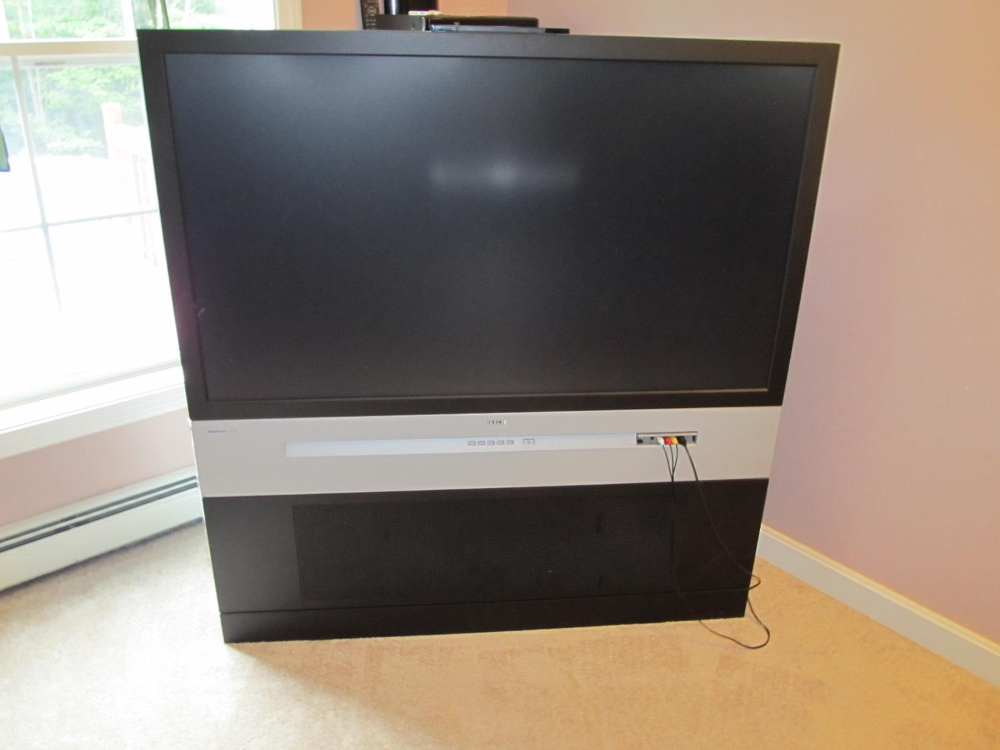
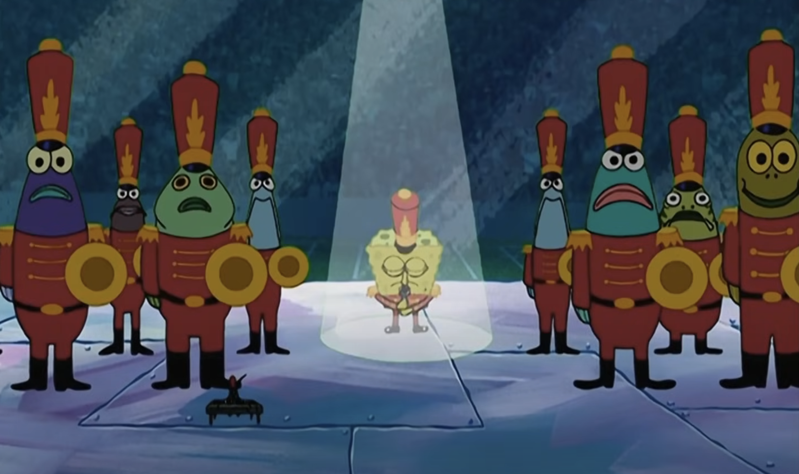
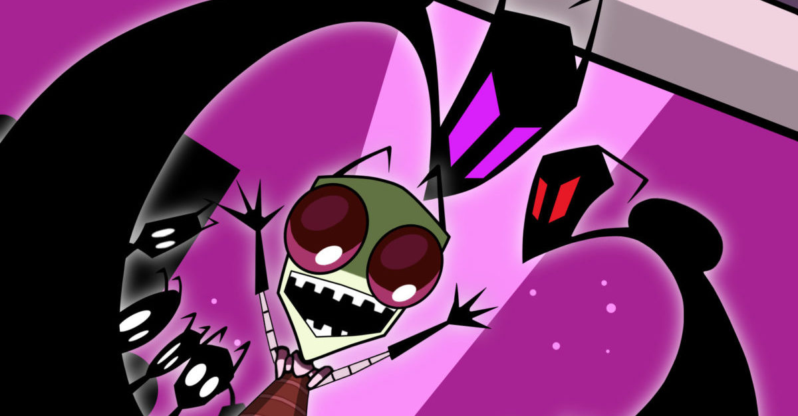
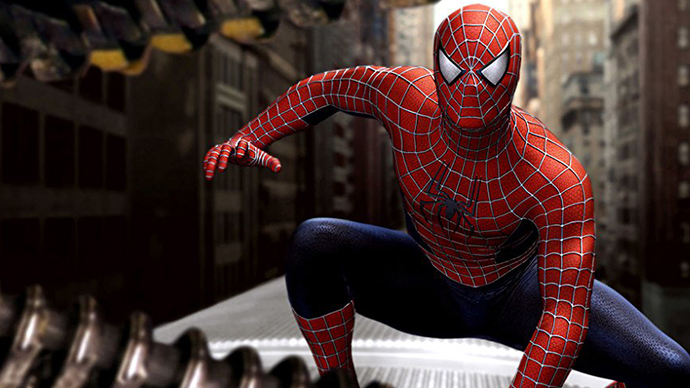
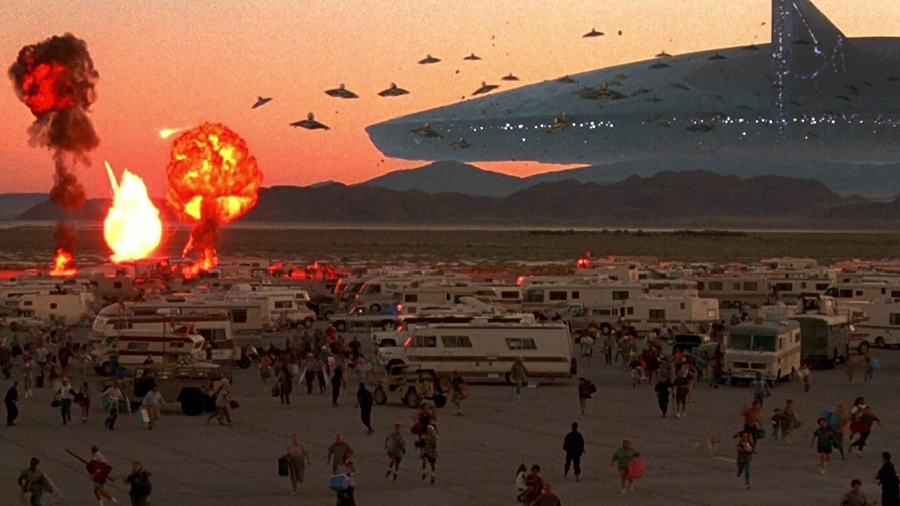

Media had more charm than it does now.

SpongeBob Squarepants © Nickelodeon 1999
SpongeBob Squarepants
SpongeBob SquarePants is a beloved animated series that follows the quirky and optimistic sponge, SpongeBob, as he navigates life in the underwater city of Bikini Bottom. The show is filled with colorful characters, hilarious adventures, and heartwarming moments that appeal to both kids and adults. What I love about it is its unique blend of humor, creativity, and positive messages about friendship, hard work, and staying true to yourself. The whimsical world and memorable catchphrases make it a timeless classic that always brings a smile to my face.
Fun link
360° tour of the Krusty Krab

Invader Zim © Nickelodeon 2001
Invader Zim
Invader Zim is a darkly comedic animated series that follows an eccentric and egotistical alien, Zim, as he attempts to conquer Earth, unaware of how incompetent he is. Set against the backdrop of a bizarre and dystopian world, the show blends absurd humor with a unique, unsettling atmosphere. What I love about *Invader Zim* is its distinct art style, clever writing, and the sheer weirdness of its characters and plots. The show’s dark, satirical tone combined with Zim’s relentless ambition and his dysfunctional relationships with other characters makes it both hilarious and deeply entertaining. It's a quirky, offbeat series that doesn’t hold back, making it unforgettable.
Fun link
Why was Invader Zim canceled so soon?

Spiderman 2 © Sony 2004
The Original Spiderman Trilogy
The original Spider-Man trilogy, directed by Sam Raimi and starring Tobey Maguire, is a defining set of superhero films that helped set the stage for modern comic book movies. The trilogy follows Peter Parker’s journey from an awkward teenager to a heroic figure grappling with responsibility, loss, and personal growth. What I love about it is the emotional depth, the iconic villains like Green Goblin and Doc Ock, and the perfect blend of action and heart. Tobey Maguire’s portrayal of Peter is both relatable and earnest, while the films’ dramatic moments and memorable quotes resonate even years later. The trilogy captures the essence of Spider-Man, making it a nostalgic and heartfelt experience.
Fun link
What happend to Spiderman 4?

Independence Day © 20th Century Fox 1996
Independence Day
Independence Day is a classic sci-fi blockbuster that pits humanity against a massive alien invasion, with the fate of the world hanging in the balance. The film’s mix of thrilling action, jaw-dropping special effects, and unforgettable moments—like the destruction of iconic landmarks—makes it a true spectacle. What I love about Independence Day is its sense of unity and resilience, as people from different walks of life come together to fight for survival. Will Smith’s charismatic performance adds humor and heart to the intense moments, while the film’s themes of hope and defiance in the face of overwhelming odds never fail to inspire. It’s a perfect blend of patriotism, action, and fun.
Fun link
Independence Day: Behind the Scenes